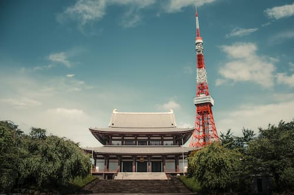

Minha cidade favorita é Tóquio, pois reúne tradição e tecnologia em um mesmo lugar. Nela podemos encontrar centros budistas, restaurantes antigos e, ao mesmo tempo, arranha-céus e telões.
Além disso, a segurança e a qualidade de vida também me chamam bastante atenção, pois as pessoas andam bastante de bicicleta, praticam bastante exercícios e a taxa de criminalidade lá é baixíssima.
A gastronomia também me chama bastante atenção, pois é bastante diferente da nossa comida ocidental.

=======Minha cidade favorita é Tóquio, pois reúne tradição e tecnologia em um mesmo lugar. Nela podemos encontrar centros budistas, restaurantes antigos e, ao mesmo tempo, arranha-céus e telões.
Além disso, a segurança e a qualidade de vida também me chamam bastante atenção, pois as pessoas andam bastante de bicicleta, praticam bastante exercícios e a taxa de criminalidade lá é baixíssima.
A gastronomia também me chama bastante atenção, pois é bastante diferente da nossa comida ocidental.
>>>>>>> 4eaaecc658d994ef42de77734da169fe379e63aa